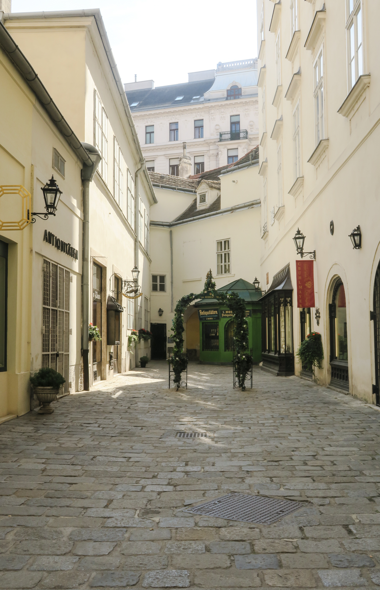

I developed a habit of writing in elementary school when my mom gave me a really nice notebook before a trip. I can write on anything, hotel memo, tissue paper, and I will try to keep them at the back pocket of my moleskines. Specific clouds like this reminds me of several things: one, elementary school; second, paintings from Monet and Peder Kroyer; third, my favorite season of all times, the autumn. Despite all other good Ghibli films, The Wind Rises, Miyazaki's most recent production, is what I appreciate the most. Joe Hisaishi's music was touching, as much as in Spirited Away.

For reasons, my family lived in Vienna for a couple of years when I turned 1 year old. I have forgotten how to speak German, but I can order food in restaurants without trouble. Wiener Schnitzel is a combination of my favorite food: fried pork (love katsu as well), lemon, plus creamy(well cooked potatoes) sour(a delicious dressing balanced with acidity) salad. It is perfect for all season.
I think ultimately what we surround ourselves with and get involved in represent us to some degree. Hence I chose what I enjoy or have emotional connection to represent me.